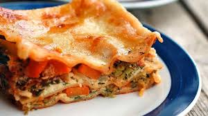
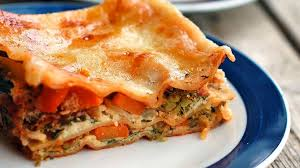

SP' DINING N HOTELS HRBR Branch offers a delightful journey into authentic Punjabi cuisine. The dishes are bursting with traditional flavors that truly capture the essence of Punjab. One of the highlights of my visit was the Lassi, which is an absolute must-try—creamy, rich, and perfectly sweet. What sets this cafe apart is its unique seating on traditional beds (Khatiya), creating a charming dhaba-like ambiance. If you're looking for a genuine Punjabi dining experience, Kapoor's Cafe HRBR Branch is the place to be.